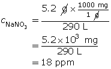

Module 4—Properties of Solutions
 Read
Read
Parts per Million Concentrations

© Nikola Hristovski/shutterstock
Sometimes the concentration of solute in a solution is very small. To communicate the concentration of such solutions, parts per million or even smaller concentrations are used.
You may have heard reports on climate change often refer to the ppm concentration of carbon dioxide in the atmosphere. A part per million may be thought of as one drop of water in a bathtub full of water or as 1 second every 11.6 days.
Read ”Parts per Million Concentration” and “COMMUNICATION example 3” on pages 204 and 205 in your textbook.
Parts per million, as the name suggests, requires that the mass of solute be a million times less than the mass of solution. For that reason, the units expressing solute are typically milligrams (mg), whereas the units expressing solvent are typically kilograms (kg). This leads to a ppm concentration in mg/kg. Water is a unique solvent in that 1 L has a mass of 1 kg. As such, ppm concentrations in water can be expressed as mg/L instead of mg/kg. In this course you can always assume that water is the solvent unless specifically told otherwise. The following summarizes the three main ways you can approach ppm calculations:
This example shows how to convert one means of expressing concentration to another.
Example 3: Express 38 ppm as a % W/W concentration.
First, convert from ppm into mg/kg.
Next, express the numerator and denominator with the same unit. This is required for % W/W concentration calculations. In this example, convert the denominator from kilograms into milligrams.

Finally, divide and express a % W/W concentration.
For more practice on calculations involving concentration, carefully work through “COMMUNICATION examples” 5, 6, and 7 on page 207 in your textbook.
 Self-Check
Self-Check
SC 16. 80 mg of potassium chloride is dissolved in water to make a 0.85-L solution. Express the concentration in ppm.
SC 17. 5.2 g of sodium nitrate is dissolved in water to make a 290-L solution. Express the concentration in ppm.
SC 18. 29 g of magnesium sulfate is dissolved in water to make a 0.80-kg solution. Express the concentration in ppm.
SC 19. 3.4 g of sucrose is dissolved in water to make a 759-g solution. Express the concentration in ppm.
SC 20. 0.050 g of sodium chloride is dissolved in water to make a 600-g solution. Express the concentration in ppm.
SC 21. 0.020 kg of lithium bromide is dissolved in water to make a 600-kg solution. Express the concentration in ppm.
SC 22. Express 780 ppm as a ratio in units of mg/L.
SC 23. Express 41 ppm as a % W/W concentration.
Self-Check Answers
SC 16.
SC 17.

SC 18.

SC 19.
SC 20.

SC 21.

SC 22.
SC 23.